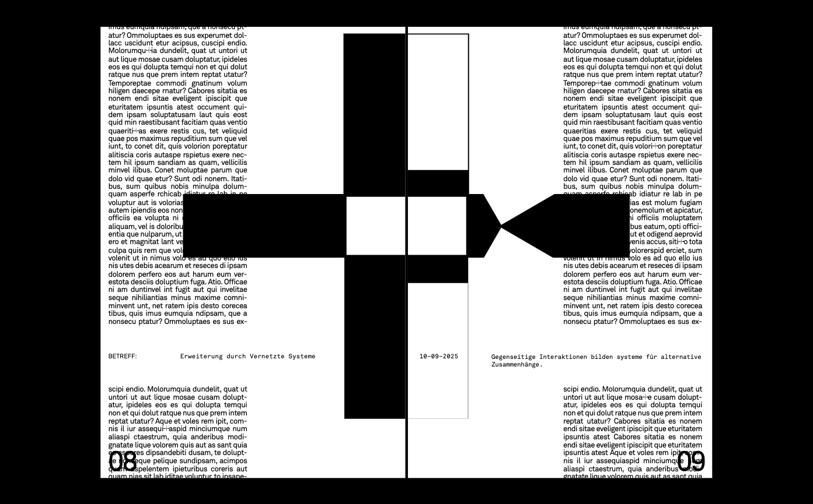

Experiments
| ### | Name | Interaction | Layout | Live | Elements | Info |
|---|---|---|---|---|---|---|
| 023 | Final Output | { } | { } | { } | { } | +
Concepts for typographic gender-inclusive and hybrid approaches in the german language.

|
| 022 | Prepare Layout for Final Experiments | ü | { } | ü | ü | +
This step sets up a blueprint for the final layout to be used together with the interactions, including fixing any more issues with the print preview.
|
| 021 | Print Preview Bug Fix | ü | { } | ü | ü | +
The additional wrapper required for the web view interferes with the print preview and shrinks the final output. A js script removes this wrapper when printing.
|
| 020 | Flow Text | ü | { } | ü | ü | +
Flowing text from one div to another (across the "pages") ignores the paragraph styling and most importantly the text elements to be changed by the interaction. It is safer to treat the pages as separate and manually split the text.
|
| 019 | Fix Scalability | { } | { } | { } | ü | +
Fixes Scalability of media screen to allow for mm and pt measurements identical to print output.
|
| 018 | Track Inputs | { } | ü | { } | ü | +
Remembers and communicates inputs from anyone interacting with the site.
|
| 017 | Custom Input | { } | { } | ü | ü | +
Added custom written input that changes how the text appears.
|
| 016 | Layout Live Server | ü | { } | ü | ü | +
Layout for live server experiment.
|
| 015 | Print Marks | ü | { } | ü | ü | +
Added print marks to print preview.
|
| 014 | Setup for System | ü | { } | ü | { } | +
Two page layout that would accomodate a kind of graphic system on the left page, with text on the right page.
|
| 013 | Freeze Interaction | { } | ü | ü | { } | +
The cloned element is changed to a colon with a different text effect which relies on mouseX and mouseY instead of hover. Now, when the mouse is pressed the effect freezes.
|
| 012 | Cloning Elements (Underline) | ü | ü | ü | { } | +
The cloned element is changed to an underline.
|
| 011 | Cloning Elements | { } | ü | ü | ü | +
The interactive element is cloned to the text element in order to demonstrate its use in text.
|
| 010 | Distortion Effect | { } | ü | ü | { } | +
The hover effect is now distorted and fully stops when interacted with.
|
| 009 | Particle Effect | { } | ü | ü | { } | +
The hover effect is changed to include an effect from a sepparate js library called bloat.js. Since it's not a proximity effect, the printed version now looks the same.
|
| 008 | Hover Interaction | { } | ü | ü | { } | +
Hover changes the main element in both the screen and print version. However, the print version presents differently from the screen version.
|
| 007 | Layout Setup | ü | { } | ü | ü | +
Layout structure example that includes both longer text and an element that can be changed. The print view is adapted as well.
|
| 006 | Type Anywhere | { } | ü | { } | ü | +
A live server testing ground with a free typing grid. The page refreshes after a certain amount of time, due to server restraints.
|
| 005 | Single Character Typing | { } | ü | { } | ü | +
A live server testing ground with single character inputs. The page refreshes after a certain amount of time, due to server restraints.
|
| 004 | Overlaping Text | { } | ü | ü | ü | +
The interactions with the text are made visible through overlapping once printed.
|
| 003 | Underlines and Page Interface | { } | { } | ü | ü | +
Underlines appear differently depending on interactions.
|
| 002 | PlusMinus Proximity | { } | ü | ü | { } | +
PlusMinus symbol variable type animation. The symbol changes according to the proximity of the pointer.
|
| 001 | PlusMinus Across | { } | ü | ü | { } | +
PlusMinus symbol variable type animation. The symbols change in a uniform way depending on the position of the pointer.
|
Shared Insights
Andrea Dreier is a graphic designer and teacher combining design with education and collaborative practices. Her MA Thesis Beyond asterisks and underlines highlights how the intersection between grammatical gender, social norms, and linguistic habits become visible through type design. Her sharing of resources and insights into the practice have been invaluable to the contextualisation of this project within a larger ecosystem.
PostBinaryTypeLab
Nonbinary Glyphs Test Tool
Eva Weinmayr’s collaborative practice is grounded in contemporary art, radical education and critical infrastructures. The proposed shift from outcome based approaches towards social processes, particularly in publishing, greatly influenced the process based approach within this project.
Micro-politics of Publishing
Conditions for Engaging in Typographic Use
Loraine Furter is a graphic designer and researcher specialized in editorial design, hybrid publishing and intersectional xfeminism. Her insights into establishing collective work environments and processes, as well as exploring the interactions between web and digital media have provided valuable perspectives.
Bye Bye Binary Collective
Librarioli D - Édition et Pouvoir
Research Material
Blas, Z., & Schirmacher, W. (2011). The Transreal: Political Aesthetics of Crossing Realities.
Richardson, L. (2021). Glitch feminism: a manifesto. Gender, Place & Culture.
White, H. (2021). Typohacks. form.
Miller, M. (2022). Shifting Symbols: The Gender Star. Source Type.
O'Farrell, M., & Vallone, L. (1999). Virtual Gender: Fantasies of Subjectivity and Embodiment.
Kraemer, J. (2021). The Gender of the Interface: Coding Masculinity, Crafting Femininity among Berlin’s Creative Class. Catalyst: Feminism, Theory, Technoscience
Soulellis, P. (2021). What is Queer Typography? Queer.Archive.Work.
Soulellis, P. (2025). The future of typography is queer.
Daniels, J. (2009). Rethinking Cyberfeminism(s): Race, Gender, and Embodiment.
Kovacs, A. (2017). Gendering Surveillance.
Feminist Internet (2019). Recoding Utopias: The Importance of Queer Spaces.
Stöver, L., Gebert, N. (2018). href zine xyber*feminism.
Furter, L. (2020). ÉDITION ET POUVOIR.
Lavazza, S. (2023). The Problem of Non Inclusive Language. Collletttivo.
Zong, J. et al. (2023). MsGlitch403.
Simionato, A., Donnachie, K. a. (2021). This Indignant Page: The Politics of the Paratextual. Generative Unfoldings.
Encoder Rat Decoder Rat (2021). Gender Generator. Generative Unfoldings.
Bye Bye Binary (2024). Læ Queer Unicode Initiative (QUNI).